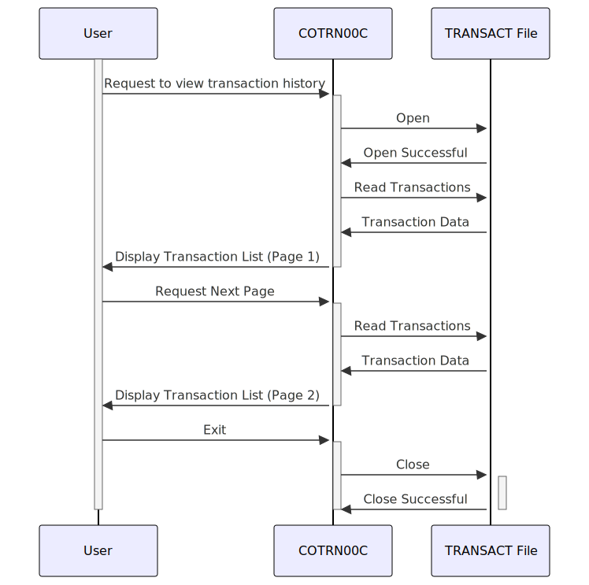

Gerado em: 1 de outubro de 2024
Título do Documento: Módulo de Listagem de Transações CardDemo - Especificação de Negócio
Descrição Resumida:
O módulo de Listagem de Transações CardDemo permite que os usuários revisem seu histórico de transações de cartão de crédito. É semelhante a visualizar um extrato bancário digital. Os usuários podem navegar pelas páginas de transações anteriores, com cada transação exibindo informações importantes, como data, descrição e valor.
Histórias do Usuário:
Como usuário do CardDemo, desejo visualizar um histórico das minhas transações de cartão de crédito para poder acompanhar meus gastos e garantir a precisão das minhas declarações.
Épico Relacionado:
4 - Processamento de Transações
Requisitos Funcionais:
- Recuperação de Transações: O sistema deve recuperar e exibir transações associadas à conta do usuário conectado.
- Paginação: As transações devem ser apresentadas em páginas gerenciáveis para evitar sobrecarga de informações.
- Navegação: Os usuários devem poder navegar para frente e para trás pelas páginas de transações.
- Seleção de Transação: Os usuários devem ter a opção de selecionar uma transação específica para visualizar informações mais detalhadas (não totalmente implementado na versão atual).
- Tratamento de Erros: O sistema deve exibir mensagens claras em caso de erros, como atingir o final do histórico de transações ou tentar navegar além da primeira ou última página.
Requisitos Não Funcionais:
- Desempenho: A lista de transações deve carregar de forma rápida e eficiente, mesmo para usuários com um grande histórico de transações.
- Usabilidade: A interface para visualizar transações deve ser intuitiva e fácil de navegar.
- Segurança: O acesso aos dados da transação deve ser restrito apenas a usuários autorizados.
Critérios de Aceite:
- O sistema recupera e exibe com sucesso as transações associadas ao usuário conectado.
- As transações são exibidas em um formato paginado, com um número definido pelo usuário de transações por página (atualmente codificado).
- Os usuários podem navegar para frente e para trás pelas páginas de transações sem encontrar erros.
- O sistema exibe mensagens apropriadas quando o usuário chega ao início ou ao final do histórico de transações.
- O sistema trata erros com elegância e exibe mensagens informativas para o usuário.
Melhorias de Código:
- Implementar paginação configurável pelo usuário, permitindo que os usuários escolham quantas transações exibir por página.
- Concluir a funcionalidade de seleção de transação, permitindo que os usuários visualizem informações detalhadas para uma transação específica.
- Considere adicionar opções de pesquisa ou filtragem para ajudar os usuários a encontrar transações específicas.
Melhorias de Segurança:
- Implementar medidas de autenticação mais robustas, como autenticação de dois fatores, para evitar acesso não autorizado.
- Criptografar dados confidenciais de transações em trânsito e em repouso para proteger a privacidade do usuário.
- Implementar trilhas de auditoria para rastrear o acesso do usuário aos dados da transação para fins de segurança e conformidade.
Diagrama Conceitual:

–Made by “Smart Engineering” (by Compass.UOL)–